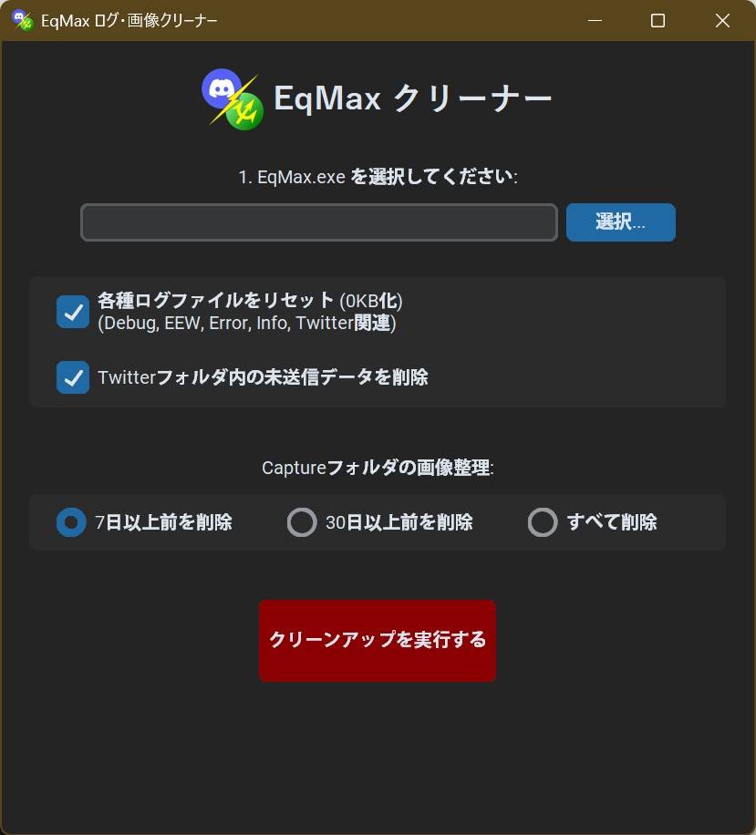

EqMaxに蓄積されたログやキャッシュファイルを安全削除
起動方法
総合ハブの ログ・画像掃除 (⑤の部分)を実行してください。

クリーナー概要

- EqMax.exeの選択: ファイルを選択します。
- 各種ログのリセット
- EqMax内部のログファイルの中身を削除します。
- Twitterフォルダ内の未送信データを削除します。
- Captureフォルダの画像処理
- Twitter(X)やEqMaxフォルダ内のデータを削除します。
- 画像の削除は「過去7日」「30日」「すべて削除」から選べます。
- クリーンアップを実行: 上記設定に基づきファイルを削除します。
※Tips：Discord連携ツールについて
Discord連携ツールは Twitter.LOG を参照してEEWを送信し、Capture フォルダ内の画像を投稿します。
Twitter.log のサイズが肥大化するとEEWの検索速度が低下する可能性があります。10MB程度なら問題ありませんが、100MBを超えてくると速度に影響が出る場合があるため、定期的な清掃を推奨します。
画像ファイルに関しては大量に溜まっても影響は起きにくいですが、PNG形式のためディスク容量を圧迫します。定期的な整理をおすすめします。